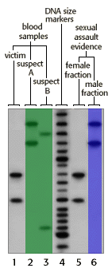

DNA Forensics Problem Set 2
Problem 7: Rape with Two Suspects
The key portion of the autoradiograph from a single locus probe analysis of various DNA samples in a rape investigation is shown in the figure.
If you are the DNA analyst, you should conclude that:
Tutorial
Which suspect matches the evidence?|  |
From problem set 1, you learned that if even one band in the sexual assault evidence is inconsistent with the profile of the suspect, then the suspect is excluded as a source of that DNA.
Determine which of the lanes highlighted in green (the DNA of the two suspects) match the lane highlighted in blue (the male fraction of the sex assault evidence). You will find that one of the suspects is easily excluded as a source of the DNA. Also check the internal control--that the victim's reference DNA matches the female fraction of the sex assault evidence. |


The Biology Project
University of Arizona
April 7, 1997
Contact the Development Team
http://www.biology.arizona.edu
All contents copyright © 1996. All rights reserved.